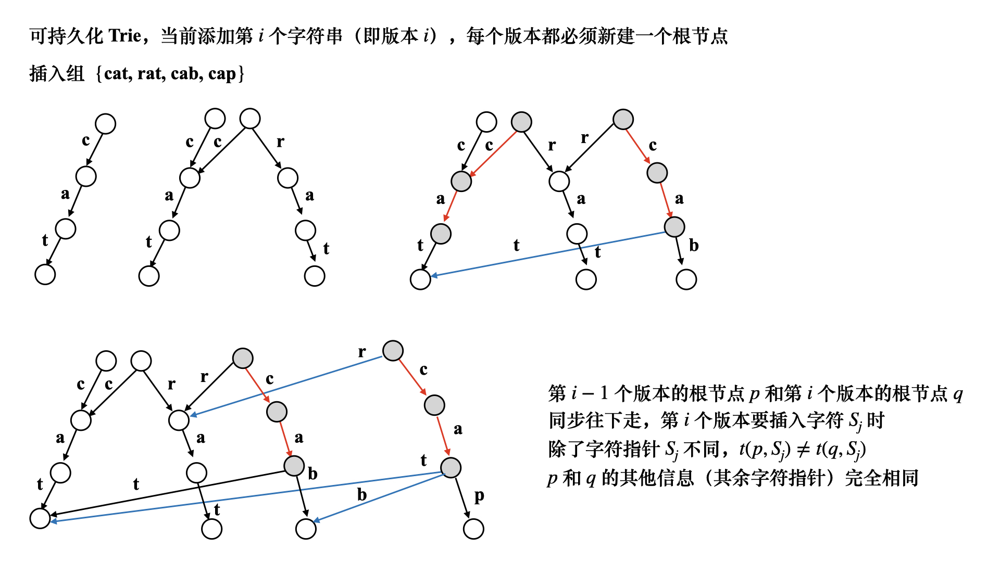

可持久化 Trie 
用root [ ⋯ ] \text{root}[\cdots] root [ ⋯ ] trie \text{trie} trie C C C A A A i i i i i i p ← root ( i − 1 ) p \leftarrow \text{root}(i-1) p ← root ( i − 1 ) 新建一个节点q q q q = r o o t ( i ) = + + t o t q = root(i) = ++tot q = r o o t ( i ) = + + t o t S j S_j S j 如果p ≠ 0 p \neq 0 p = 0 ∀ c ∈ { C } , c ≠ S j \forall c \in \{C\}, \ c \neq S_j ∀ c ∈ { C } , c = S j t ( q , c ) ← t ( p , c ) t(q, c) \leftarrow t(p, c) t ( q , c ) ← t ( p , c ) ∀ c ∈ { A } \forall c \in \{A\} ∀ c ∈ { A } t ( q , c ) ← t ( p , c ) t(q, c) \leftarrow t(p, c) t ( q , c ) ← t ( p , c ) t ( q , S j ) t(q, S_j) t ( q , S j ) 新建一个节点，令t ( q , S j ) = + + t o t t(q, S_j) = ++tot t ( q , S j ) = + + t o t S j S_j S j p , q p, q p , q p ← t ( p , S j ) , q ← t ( q , S j ) , j ← j + 1 p \leftarrow t(p, S_j), q \leftarrow t(q, S_j), j \leftarrow j+1 p ← t ( p , S j ) , q ← t ( q , S j ) , j ← j + 1 最大异或和
⨁ i = p n a p = S n ⊕ S p − 1 \bigoplus_{i = p}^{n} a_p = S_n \oplus S_{p-1} i = p ⨁ n a p = S n ⊕ S p − 1
对于添加操作，很简单S n + 1 = S n ⊕ x , n = n + 1 S_{n+1} = S_n \oplus x, \ n = n+1 S n + 1 = S n ⊕ x , n = n + 1 如果令p ′ = p − 1 , l − 1 ⩽ p ′ ⩽ r − 1 p' = p-1, \ l-1 \leqslant p' \leqslant r-1 p ′ = p − 1 , l − 1 ⩽ p ′ ⩽ r − 1 v a l = x ⊕ S n val = x \oplus S_n v a l = x ⊕ S n p p p l − 1 ⩽ p ⩽ r − 1 l-1 \leqslant p \leqslant r-1 l − 1 ⩽ p ⩽ r − 1 S p ⊕ v a l S_p \oplus val S p ⊕ v a l p ∈ [ l − 1 , r − 1 ] p \in [l-1, r-1] p ∈ [ l − 1 , r − 1 ] 对于p ⩽ r − 1 p \leqslant r-1 p ⩽ r − 1 trie \text{trie} trie r − 1 r-1 r − 1 root ( r − 1 ) \text{root}(r-1) root ( r − 1 ) 查询最大异或和路径 p = root ( r − 1 ) p = \text{root}(r-1) p = root ( r − 1 ) v a l val v a l 对于p ⩾ l − 1 p \geqslant l-1 p ⩾ l − 1 时间戳⩾ l − 1 \geqslant l-1 ⩾ l − 1 即可insert ( p r e , p , i ) \text{insert}(pre, p, i) insert ( p r e , p , i ) i i i k k k k k k c = S i ≫ k & 1 c = S_i \gg k \ \& \ 1 c = S i ≫ k & 1 如果p r e ≠ 0 pre \neq 0 p r e = 0 t ( p , c ⊕ 1 ) ← t ( p r e , c ⊕ 1 ) t(p, c\oplus 1) \leftarrow t(pre, c\oplus 1) t ( p , c ⊕ 1 ) ← t ( p r e , c ⊕ 1 ) t ( p , c ) = + + t o t t(p, c) = ++tot t ( p , c ) = + + t o t 于此同时标记节点时间戳d f n ( p ) = i dfn(p) = i d f n ( p ) = i ，然后和主席树一样同步往下走 p ← t ( p , c ) , p r e ← t ( p r e , c ) , then d f n ( p ) = i p \leftarrow t(p, c), \ pre \leftarrow t(pre, c), \textbf{then} \ dfn(p) = i p ← t ( p , c ) , p r e ← t ( p r e , c ) , then d f n ( p ) = i 1 2 3 4 5 6 7 8 9 10 11 12 13 14 15 16 17 18 19 20 21 22 23 24 25 26 27 28 29 30 31 32 33 34 35 36 37 38 39 40 41 42 43 44 45 46 47 48 49 50 51 52 53 54 55 56 57 58 59 60 61 62 63 64 65 66 67 const int N = 600000 + 5; const int maxn = N * 25; int n, m, s[N], root[N]; class Trie { public: int t[maxn][2], dfn[maxn]; int tot; Trie tot = 0; memset(t, 0, sizeof 0); memset(dfn, 0, sizeof 0); dfn[0] = -1; } void insert(int pre, int p, int ver) { dfn[p] = ver; for (int k = 25; k >= 0; k--) { int c = s[ver] >> k & 1; t[p][c^1] = t[pre][c^1]; t[p][c] = ++tot; p = t[p][c], pre = t[pre][c]; dfn[p] = ver; } } int ask(int p, int val, int lim) { for (int k = 25; k >= 0; k--) { int c = val >> k & 1; if (dfn[ t[p][c^1] ] >= lim) p = t[p][c^1]; else p = t[p][c]; } return s[dfn[p]] ^ val; } } trie; int main freopen("input.txt" , "r" , stdin); cin >> n >> m; // init for (int i = 1; i <= n; i++) { int x; scanf("%d" , &x); s[i] = s[i-1] ^ x; root[i] = ++trie.tot; trie.insert(root[i-1], root[i], i); } while (m--) { char cmd[2]; scanf("%s" , cmd); if (cmd[0] == 'A' ) { int x; scanf("%d" , &x); root[++n] = ++trie.tot; s[n] = s[n-1] ^ x; trie.insert(root[n-1], root[n], n); } else { int l, r, x; scanf("%d%d%d" , &l, &r, &x); int res = trie.ask(root[r-1], s[n]^x, l-1); printf ("%d\n" , res); } } }
树上可持久化 Trie 树上异或
利用可持久化线段树的思路，可以设计出如下算法
dfs ( u ) \textbf{dfs}(u) dfs ( u ) ( u , v ) (u, v) ( u , v ) v v v u u u trie \text{trie} trie root ( v ) = + + t o t , insert ( r o o t ( u ) , r o o t ( v ) ) \text{root}(v) = ++tot, \quad \text{insert}(root(u), root(v)) root ( v ) = + + t o t , insert ( r o o t ( u ) , r o o t ( v ) ) ver ( v ) = ver ( u ) + 1 \text{ver}(v) = \text{ver}(u) + 1 ver ( v ) = ver ( u ) + 1 查询操作呢？对于ask ( x , y , v a l ) \text{ask}(x, y, val) ask ( x , y , v a l ) d = LCA ( x , y ) , f a ← f a ( lca ( x , y ) ) d = \text{LCA}(x, y), \ fa \leftarrow fa(\text{lca}(x, y)) d = LCA ( x , y ) , f a ← f a ( lca ( x , y ) ) root ( x ) \text{root}(x) root ( x ) root ( y ) \text{root}(y) root ( y ) max \max max trie \text{trie} trie 必须保证 x , y x, y x , y 是f a fa f a p = r o o t ( f a ) , q = r o o t ( x ) p = root(fa), q = root(x) p = r o o t ( f a ) , q = r o o t ( x ) 同步往下走，保证q q q ver ( q ) > ver ( p ) \text{ver}(q) > \text{ver}(p) ver ( q ) > ver ( p ) 具体来说，以r o o t ( x ) root(x) r o o t ( x ) ask ( p , q , v a l ) = ask ( r o o t ( f a ) , r o o t ( x ) , v a l ) \text{ask}(p, q, val) = \text{ask}(root(fa), root(x), val) ask ( p , q , v a l ) = ask ( r o o t ( f a ) , r o o t ( x ) , v a l ) v a l val v a l k k k c c c p , q p, q p , q c ⊕ 1 c \oplus 1 c ⊕ 1 p ← t ( p , c ⊕ 1 ) , q ← t ( q , c ⊕ 1 ) , r e s = r e s + ( 1 ≪ k ) p \leftarrow t(p, c \oplus 1), q \leftarrow t(q, c \oplus 1), res = res + (1 \ll k) p ← t ( p , c ⊕ 1 ) , q ← t ( q , c ⊕ 1 ) , r e s = r e s + ( 1 ≪ k ) c ⊕ 1 c \oplus 1 c ⊕ 1 c c c 1 2 3 4 5 6 7 8 9 10 11 12 13 14 15 16 17 18 19 20 21 22 23 24 25 26 27 28 29 30 31 32 33 34 35 36 37 38 39 40 41 42 43 44 45 46 47 48 49 50 51 52 53 54 55 56 57 58 59 60 61 62 63 64 65 66 67 68 69 70 71 72 73 74 75 76 77 78 79 80 81 82 83 84 85 86 87 88 89 90 91 92 93 94 95 96 97 98 99 100 101 102 103 104 105 106 107 108 109 110 111 112 113 114 115 116 117 118 119 120 121 const int N = 1e5 + 5; const int maxn = N * 32, H = 17; int a[N], root[N], n, m; class Graph { public: int n; int tot; vector<int> head, ver, ne; Graph(int _n) : n(_n) { tot = 1; head.resize(n), ver.resize(n<<1), ne.resize(n<<1 ); } void clear tot = 1; fill(head.begin(), head.end(), 0); } void add(int a, int b) { ver[++tot] = b; ne[tot] = head[a]; head[a] = tot; } } G(N); class Trie { public: int tot; int t[maxn][2], ver[maxn]; Trie tot = 0; memset(t, 0, sizeof t); memset(ver, 0, sizeof ver); } void clear tot = 0; memset(t, 0, sizeof t); memset(ver, 0, sizeof ver); } void insert(int p, int q, int val) { ver[q] = ver[p] + 1; for (int k = 16; k >= 0; k--) { int c = val >> k & 1; t[q][c^1] = t[p][c^1]; t[q][c] = ++tot; p = t[p][c], q = t[q][c]; ver[q] = ver[p] + 1; } } int query(int fa, int p, int val) { int res = 0; for (int k = 16; k >= 0; k--) { int c = val >> k & 1; if (ver[ t[fa][c^1] ] < ver[ t[p][c^1] ]) { res += (1<<k); fa = t[fa][c^1], p = t[p][c^1]; } else fa = t[fa][c], p = t[p][c]; } return res; } } trie; int fa[N][H], dep[N]; void dfs(int u, int pa) { fa[u][0] = pa, dep[u] = dep[pa] + 1; for (int i = 1; i < H; i++) fa[u][i] = fa[fa[u][i-1]][i-1]; root[u] = ++trie.tot, trie.insert(root[pa], root[u], a[u]); for (int i = G.head[u]; i; i = G.ne[i]) { int v = G.ver[i]; if (v == pa) continue; dfs(v, u); } } int lca(int x, int y) { if (dep[y] < dep[x]) swap(x, y); for (int i = H-1; i >= 0; i--) { if (dep[ fa[y][i] ] >= dep[x]) y = fa[y][i]; } if (y == x) return y; for (int i = H-1; i >= 0; i--) { if (fa[y][i] != fa[x][i]) y = fa[y][i], x = fa[x][i]; } return fa[x][0]; } int main() { freopen("input.txt", "r", stdin); while (~scanf("%d%d", &n, &m)) { // init trie.clear(), G.clear(); memset(root, 0, sizeof root); memset(fa, 0, sizeof fa); memset(dep, 0, sizeof dep); for (int i = 1; i <= n; i++) scanf("%d", &a[i]); for (int i = 0; i < n-1; i++) { int u, v; scanf("%d%d", &u, &v); G.add(u, v), G.add(v, u); } // dfs dfs(1, 0); // query while (m--) { int x, y, val; scanf("%d%d%d", &x, &y, &val); int f = fa[lca(x, y)][0]; int res = max(trie.query(root[f], root[x], val), trie.query(root[f], root[y], val)); printf("%d\n", res); } } }
树上可持久化 Trie 综合 异或粽子
考虑前缀和s [ i ] s[i] s [ i ] p p p s [ 1 ⋯ p − 1 ] s[1\cdots p-1] s [ 1 ⋯ p − 1 ] p ′ p' p ′ s [ p ′ ] ⊕ s [ p ] s[p'] \oplus s[p] s [ p ′ ] ⊕ s [ p ] trie \text{trie} trie
对于可持久化trie \text{trie} trie root ( p − 1 ) \text{root}(p-1) root ( p − 1 ) [ 1 ⋯ p − 1 ] [1\cdots p-1] [ 1 ⋯ p − 1 ] trie \text{trie} trie k-query \text{k-query} k-query
对于区间[ 1 ⋯ r ] [1\cdots r] [ 1 ⋯ r ] l ∈ [ 1 ⋯ r − 1 ] l \in [1\cdots r-1] l ∈ [ 1 ⋯ r − 1 ] s l ⊕ s r s_l \oplus s_r s l ⊕ s r k k k p ← root ( r − 1 ) , v a l ← s [ r ] p \leftarrow \text{root}(r-1), \ val \leftarrow s[r] p ← root ( r − 1 ) , v a l ← s [ r ] 从高位到低位 检查v a l val v a l b b b c c c size ( t ( p , c ⊕ 1 ) ) ⩾ k \textbf{size}(t(p, c \oplus 1)) \geqslant k size ( t ( p , c ⊕ 1 ) ) ⩾ k r e s + = ( 1 ≪ b ) , p ← t ( p , c ⊕ 1 ) res += (1 \ll b), \ p \leftarrow t(p, c\oplus 1) r e s + = ( 1 ≪ b ) , p ← t ( p , c ⊕ 1 ) k ′ ← k − size ( t ( p , c ⊕ 1 ) ) k' \leftarrow k - \textbf{size}(t(p, c\oplus 1)) k ′ ← k − size ( t ( p , c ⊕ 1 ) ) p ← t ( p , c ) p \leftarrow t(p, c) p ← t ( p , c ) t ( p , c ) t(p, c) t ( p , c ) k ′ k' k ′
需要注意的是边界，想要让r = 1 r = 1 r = 1 trie \text{trie} trie insert ( root ( 0 ) , 0 ) \text{insert}(\text{root}(0), 0) insert ( root ( 0 ) , 0 ) root ( 0 ) \text{root}(0) root ( 0 ) 0 0 0
具体来说
对于H H H v a l val v a l size \text{size} size insert ( p r e , p , H , v a l ) \textbf{insert}(pre, p, H, val) insert ( p r e , p , H , v a l ) H < 0 , size ( p ) = size ( p r e ) + 1 H < 0, \text{size}(p) = \text{size}(pre) + 1 H < 0 , size ( p ) = size ( p r e ) + 1 H = 0 H = 0 H = 0 c c c t ( p , c ) t(p, c) t ( p , c ) H = − 1 H = -1 H = − 1 r e s ← ( i , r k ( i ) ) res \leftarrow (i, rk(i)) r e s ← ( i , r k ( i ) ) [ 1 ⋯ i − 1 ] [1\cdots i-1] [ 1 ⋯ i − 1 ] j j j r e s = s j ⊕ x i res = s_j \oplus x_i r e s = s j ⊕ x i r k ( i ) rk(i) r k ( i ) r k ( i ) = 1 rk(i) = 1 r k ( i ) = 1 建立一个优先队列 que \text{que} que ∀ r ∈ [ 1 , n ] \forall \ r \in [1, n] ∀ r ∈ [ 1 , n ] ask ( root ( r − 1 ) , r k ( r ) , s [ r ] ) \textbf{ask}(\text{root}(r-1), rk(r), s[r]) ask ( root ( r − 1 ) , r k ( r ) , s [ r ] ) que \text{que} que 取出堆顶元素，此时堆中最大元素假设为( r e s , p ) (res, p) ( r e s , p ) ∃ l ∈ [ 1 , p ) \exist l \in [1, p) ∃ l ∈ [ 1 , p ) s l ⊕ s p s_l \oplus s_p s l ⊕ s p 1 1 1 r e s res r e s s l s_l s l 注意要接着找到 [ 1 , l − 1 ] ∪ [ l + 1 , p ) [1, l-1] \cup [l+1, p) [ 1 , l − 1 ] ∪ [ l + 1 , p ) 1 1 1 注意到[ 1 , l − 1 ] ∪ [ l + 1 , p ) [1, l-1] \cup [l+1, p) [ 1 , l − 1 ] ∪ [ l + 1 , p ) 中的第1 1 1 等价于 [ 1 , p ) [1, p) [ 1 , p ) 2 2 2 r k ( i ) = 1 rk(i) = 1 r k ( i ) = 1 ( r e s , p ) (res, p) ( r e s , p ) r e s ′ ← ask ( root ( p ) , + + r k ( p ) , s [ p ] ) res' \leftarrow \textbf{ask}(\text{root}(p), ++rk(p), s[p]) r e s ′ ← ask ( root ( p ) , + + r k ( p ) , s [ p ] ) r e s ′ res' r e s ′ 1 2 3 4 5 6 7 8 9 10 11 12 13 14 15 16 17 18 19 20 21 22 23 24 25 26 27 28 29 30 31 32 33 34 35 36 37 38 39 40 41 42 43 44 45 46 47 48 49 50 51 52 53 54 55 56 57 58 59 60 61 62 63 64 65 66 67 68 69 70 71 72 73 74 75 76 77 78 79 80 81 82 83 84 85 86 87 88 89 typedef pair<ll, int> PII; const int maxn = 500000 + 10, N = maxn * 35; const int H = 33; int n, k, rk[maxn], root[maxn]; ll s[maxn]; priority_queue<PII> heap; // insert(pre, p, H, val) // ask(root(p), rk, &ans) class Trie { public: int tot; int t[N][2], sz[N]; Trie tot = 0; memset(t, 0, sizeof t); memset(sz, 0, sizeof sz); } void insert(int pre, int p, int H, ll val) { if (H < 0) { sz[p] = sz[pre] + 1; return ; } int c = val >> H & 1; if (pre) t[p][c^1] = t[pre][c^1]; t[p][c] = ++tot; insert(t[pre][c], t[p][c], H-1, val); sz[p] = sz[t[p][c]] + sz[t[p][c^1]]; } void ask(int p, int rk, int H, ll val, ll &res) { if (H < 0) return ; int c = val >> H & 1; if (sz[ t[p][c^1] ] >= rk) { res = (res << 1 | 1 ); ask(t[p][c^1], rk, H-1, val, res); } else { res <<= 1; ask(t[p][c], rk - sz[t[p][c^1]], H-1, val, res); } } } trie; void solve for (int i = 1; i <= n; i++) { ll res = 0; trie.ask(root[i-1], rk[i], H, s[i], res); heap.push({res, i}); } ll ans = 0; while (k--) { auto x = heap.top(); heap.pop(); ans += x.first; int r = x.second; ll res = 0; trie.ask(root[r-1], ++rk[r], H, s[r], res); heap.push({res, r}); } printf ("%lld\n" , ans); } int main freopen("input.txt" , "r" , stdin); // init memset(root, 0, sizeof root); scanf("%d%d" , &n, &k); for (int i = 1; i <= n; i++) { ll x; scanf("%lld" , &x); s[i] = s[i-1] ^ x; rk[i] = 1; } // per trie root[0] = ++trie.tot; trie.insert(0, root[0], H, 0); for (int i = 1; i <= n; i++) { root[i] = ++trie.tot; trie.insert(root[i-1], root[i], H, s[i]); } // solve solve(); }
AC 自动机 AC 自动机实际上是trie \text{trie} trie kmp \text{kmp} kmp kmp \text{kmp} kmp 把所有模式串插入trie \text{trie} trie trie \text{trie} trie
AC 自动机字典树的构建
对于模式串s 1 , s 2 , ⋯ s n s_1, s_2, \cdots s_n s 1 , s 2 , ⋯ s n trie \text{trie} trie Q Q Q Q Q Q 每个状态节点对应一个模式串的一个前缀 假设当前的状态节点为u u u fail ( u ) = v \textbf{fail}(u) = v fail ( u ) = v v ∈ Q v \in Q v ∈ Q v v v u u u 最长后缀 fail \textbf{fail} fail 能和当前串后缀匹配上 的要使得匹配上的部分最长 AC 自动机的 fail 指针
fail 指针的构建 kmp \text{kmp} kmp bfs \text{bfs} bfs p p p bfs \text{bfs} bfs c c c t ( p , c ) = u t(p, c) = u t ( p , c ) = u 小于 u u u fail ( u ) \textbf{fail}(u) fail ( u ) q = fail ( p ) q = \textbf{fail}(p) q = fail ( p )
如果t ( fail ( p ) , c ) = t ( q , c ) ≠ null t(\text{fail}(p), c) = t(q, c) \neq \textbf{null} t ( fail ( p ) , c ) = t ( q , c ) = null c c c p p p fail ( p ) \textbf{fail}(p) fail ( p ) c c c fail ( u ) = t ( fail ( p ) , c ) \textbf{fail}(u) = t(\text{fail}(p), c) fail ( u ) = t ( fail ( p ) , c ) 如果t ( fail ( p ) , c ) = t ( q , c ) = null t(\text{fail}(p), c) = t(q, c) = \textbf{null} t ( fail ( p ) , c ) = t ( q , c ) = null kmp \text{kmp} kmp 不断沿着失配边走 直到走到一个存在t ( q , c ) ≠ null t(q, c) \neq \text{null} t ( q , c ) = null q ← fail ( p ) q \leftarrow \text{fail}(p) q ← fail ( p ) while q ≠ null and t ( q , c ) = null : q = fail ( q ) \quad \textbf{while} \ q \neq \text{null} \ \textbf{and} \ t(q, c) = \textbf{null}: \ q = \textbf{fail}(q) while q = null and t ( q , c ) = null : q = fail ( q ) fail ( u ) = t ( q , c ) \textbf{fail}(u) = t(q, c) fail ( u ) = t ( q , c ) q q q t ( 0 , c ) t(0, c) t ( 0 , c ) t ( 0 , c ) = 0 t(0, c) = 0 t ( 0 , c ) = 0 失配优化 t ( S , c ) t(S, c) t ( S , c ) S S S c c c S ′ S' S ′ fail ( S ) \textbf{fail}(S) fail ( S ) S S S 同步在 { S , fail ( S ) } \{S, \textbf{fail}(S)\} { S , fail ( S ) } c c c t ( fail ( S ) , c ) t(\textbf{fail}(S), c) t ( fail ( S ) , c ) S ′ S' S ′
那如果t ( fail ( S ) , c ) t(\textbf{fail}(S), c) t ( fail ( S ) , c ) 反复沿着失配边走 ，直到t ( fail ( S ) , c ) ≠ null t(\textbf{fail}(S), c) \neq \textbf{null} t ( fail ( S ) , c ) = null 能不能一步到位呢？
实际上
1 2 3 4 5 6 7 while (q.size()) { auto u = q.front(), q.pop(); for (int i = 0; i < 26; i++) { if (t[u][i]) { ... } else t[u][i] = t[ fail[u] ][i]; } }
last 优化 fail \textbf{fail} fail { sher, his, hep } \{\text{sher, his, hep}\} { sher, his, hep } 9 9 9 2 2 2
在trie \text{trie} trie val ( j ) > 0 \textbf{val}(j) > 0 val ( j ) > 0 last ( i ) \textbf{last}(i) last ( i ) i i i 下一个单词节点 的编号，也叫后缀链接
1 2 3 4 5 6 7 8 9 10 while (q.size()) { auto u = q.front(), q.pop(); for (int i = 0; i < 26; i++) { if (t[u][i]) { ... } else t[u][i] = t[ fail[u] ][i]; } // 增加 last 指针 last[u] = val[fail[u]] ? fail[u] : last[fail[u]]; }
AC 自动机的实现 AC 自动机模版
模版串多但是短，文本串很长，正好适合用 AC 自动机，由于要统计模版串出现的次数，也就是模版串能够匹配上的次数
M ( S i ) = i d x \text{M}(S_i) = idx M ( S i ) = i d x S i S_i S i 相应的字符串的编号 i d x idx i d x insert ( S i , i d x ) \textbf{insert}(S_i, idx) insert ( S i , i d x ) p p p 单词节点 ，在trie \text{trie} trie val ( p ) = i d x \text{val}(p) = idx val ( p ) = i d x trie \text{trie} trie p p p 如果是单词节点 ，其匹配上的次数记为cnt ( val ( p ) ) \textbf{cnt}(\text{val}(p)) cnt ( val ( p ) ) ∀ i ∈ [ 1 , n ] , r e s ← max ( r e s , cnt ( i ) ) \forall i \in [1, n], \ res \leftarrow \max (res, \textbf{cnt}(i)) ∀ i ∈ [ 1 , n ] , r e s ← max ( r e s , cnt ( i ) ) ∀ i ∈ [ 1 , n ] \forall i \in [1, n] ∀ i ∈ [ 1 , n ] cnt ( M [ S i ] ) = r e s \textbf{cnt}(M[S_i]) = res cnt ( M [ S i ] ) = r e s S i S_i S i
值得注意的是，如果模版串有重复，插入trie \text{trie} trie 以后出现的为准 ，只要每次插入到达单词结尾时，更新M ( S i ) = i d x M(S_i) = idx M ( S i ) = i d x cnt ( val ( p ) ) \textbf{cnt}(\text{val}(p)) cnt ( val ( p ) )
find ( T ) \textbf{find}(T) find ( T ) T T T ∀ i ∈ [ 1 , len ( T ) ] \forall i \in [1, \text{len}(T)] ∀ i ∈ [ 1 , len ( T ) ] 与此同时 p = 0 p = 0 p = 0 trie \text{trie} trie c ← T [ i ] , p ← t ( p , c ) c \leftarrow T[i], \ p \leftarrow t(p, c) c ← T [ i ] , p ← t ( p , c ) trie \text{trie} trie p p p 表示的单词编号为 val ( p ) \text{val}(p) val ( p )
如果v a l ( p ) ≠ 0 val(p) \neq 0 v a l ( p ) = 0 p p p p p p 表示的单词 能匹配上文本串T T T cnt ( val ( p ) ) + + \textbf{cnt}(\text{val}(p))++ cnt ( val ( p ) ) + + p p p 后缀链接 也一定能匹配上T T T 对应单词 的cnt \textbf{cnt} cnt + + ++ + + last \text{last} last dfs ( last ( p ) ) \textbf{dfs}(\text{last}(p)) dfs ( last ( p ) ) 如果v a l ( p ) = 0 val(p) = 0 v a l ( p ) = 0 last ( p ) ≠ 0 \text{last}(p) \neq 0 last ( p ) = 0 后缀单词能够匹配上 dfs ( last ( p ) ) \textbf{dfs}(\text{last}(p)) dfs ( last ( p ) ) 1 2 3 4 5 6 7 8 9 10 11 12 13 14 15 16 17 18 19 20 21 22 23 24 25 26 27 28 29 30 31 32 33 34 35 36 37 38 39 40 41 42 43 44 45 46 47 48 49 50 51 52 53 54 55 56 57 58 59 60 61 62 63 64 65 66 67 68 69 70 71 72 73 74 75 76 77 78 79 80 81 82 83 84 85 86 87 88 89 90 91 92 93 94 95 96 97 98 99 100 101 102 103 104 105 const int maxn = 1e6 + 5; const int N = (150 + 5) * 80; map<string, int> M; int n, cnt[N]; string text, P[N]; class AC { public: int t[N][27], fail[N], val[N], last[N]; int tot; AC memset(t, 0, sizeof t); memset(fail, 0, sizeof fail); memset(val, 0, sizeof val); memset(last, 0, sizeof last); tot = 0; } void clear tot = 0; memset(t, 0, sizeof t); memset(fail, 0, sizeof fail); memset(val, 0, sizeof val); memset(last, 0, sizeof last); } void insert(const string &str, int idx) { int p = 0; for (auto x : str) { int c = x-'a' ; if (!t[p][c]) t[p][c] = ++tot; p = t[p][c]; } val[p] = idx; } void build queue<int> que; for (int i = 0; i < 26; i++) if (t[0][i]) { que.push(t[0][i]); } while (que.size()) { auto u = que.front(); que.pop(); for (int i = 0; i < 26; i++) { if (t[u][i]) { fail[ t[u][i] ] = t[ fail[u] ][i]; que.push(t[u][i]); } else t[u][i] = t[ fail[u] ][i]; } last[u] = val[fail[u]] ? fail[u] : last[ fail[u] ]; } } void dfs(int p) { if (p) { cnt[val[p]]++; dfs(last[p]); } } void find(const string &str) { int p = 0; for (auto x : str) { int c = x-'a' ; p = t[p][c]; if (val[p]) dfs(p); else if (last[p]) dfs(last[p]); } } } ac; void solve int res = -1; for (int i = 1; i <= n; i++) res = max(res, cnt[i]); printf ("%d\n" , res); for (int i = 1; i <= n; i++) if (cnt[M[P[i]]] == res) { printf ("%s\n" , P[i].c_str()); } } int main freopen("input.txt" , "r" , stdin); while (scanf("%d" , &n) == 1 && n) { // init ac.clear(); M.clear(); memset(cnt, 0, sizeof cnt); // get data for (int i = 1; i <= n; i++) { cin >> P[i]; M[P[i]] = i; ac.insert(P[i], i); } // ac automata cin >> text; ac.build(); ac.find(text); // solve solve(); } }
AC 自动机和全概率 substring
其实就是从 AC 自动机根节点p = 0 p = 0 p = 0 u u u word ( u ) = 1 \text{word}(u) = 1 word ( u ) = 1
f ( u , L ) f(u, L) f ( u , L ) u u u L L L a n s & ← f ( u , L ) ans \ \& \leftarrow f(u, L) a n s & ← f ( u , L ) ∀ for c \forall \ \textbf{for} \ c ∀ for c if word ( t ( u , c ) ) = 0 : a n s + = prob ( c ) ⋅ f ( t ( u , c ) , L − 1 ) \quad \text{if} \ \text{word}(t(u, c)) = 0: \quad ans += \text{prob}(c) \cdot f(t(u, c), L-1) if word ( t ( u , c ) ) = 0 : a n s + = prob ( c ) ⋅ f ( t ( u , c ) , L − 1 )
边界为L ⩽ 0 , return 1 L \leqslant 0, \quad \text{return} \ 1 L ⩽ 0 , return 1 f ( 0 , L ) f(0, L) f ( 0 , L )
另外值得注意的是，构建 AC 自动机last \text{last} last word ( u ) ∣ = word ( fail ( u ) ) \text{word}(u) \mid = \text{word}(\text{fail}(u)) word ( u ) ∣ = word ( fail ( u ) )
1 2 3 4 5 6 7 8 9 10 11 12 13 14 15 16 17 18 19 20 21 22 23 24 25 26 27 28 29 30 31 32 33 34 35 36 37 38 39 40 41 42 43 44 45 46 47 48 49 50 51 52 53 54 55 56 57 58 59 60 61 62 63 64 65 66 67 68 69 70 71 72 73 74 75 76 77 78 79 80 81 82 83 84 85 86 87 88 89 90 91 92 93 94 95 96 97 98 99 100 101 const int maxn = 400 + 5; const int N = 100 + 5, SZ = 64; string P[N]; int K, n, L; double prob[SZ]; inline int get(const char ch) { if (isupper(ch)) return ch-'A' ; else if (islower(ch)) return 26 + ch-'a' ; else return 52 + ch-'0' ; } class AC { public: int t[maxn][SZ], word[maxn], fail[maxn]; int tot = 0; void clear tot = 0; memset(t, 0, sizeof t); memset(word, 0, sizeof word); memset(fail, 0, sizeof fail); } void insert(const string &str) { int p = 0; for (auto x : str) { int c = get(x); if (!t[p][c]) t[p][c] = ++tot; p = t[p][c]; } word[p] = 1; } void build queue<int> que; int p = 0; for (int i = 0; i < SZ; i++) if (t[p][i]) { que.push(t[p][i]); } while (que.size()) { auto u = que.front(); que.pop(); for (int i = 0; i < SZ; i++) { if (t[u][i]) { fail[ t[u][i] ] = t[ fail[u] ][i], que.push(t[u][i]); } else t[u][i] = t[fail[u]][i]; } word[u] |= word[fail[u]]; } } } ac; double dp[maxn][N]; int vis[maxn][N]; double f(int u, int L) { if (L <= 0) return 1.0; if (vis[u][L]) return dp[u][L]; vis[u][L] = 1; double &ans = dp[u][L]; ans = 0.0; for (int i = 0; i < SZ; i++) { if (!ac.word[ ac.t[u][i] ]) ans += prob[i] * f(ac.t[u][i], L-1); } return ans; } int main freopen("input.txt" , "r" , stdin); int T; cin >> T; int kase = 0; while (T--) { // init printf ("Case #%d: " , ++kase); ac.clear(); memset(prob, 0, sizeof prob); memset(vis, 0, sizeof vis); memset(dp, 0, sizeof dp); cin >> K; for (int i = 1; i <= K; i++) { cin >> P[i]; ac.insert(P[i]); } cin >> n; for (int i = 1; i <= n; i++) { char ch; cin >> ch; scanf("%lf" , &prob[get(ch)]); // debug(prob[get(ch)]); } cin >> L; // then solve ac.build(); double res = f(0, L); printf ("%.6lf\n" , res); } }
AC 自动机与二维匹配 二维哈希实现矩阵匹配
求矩阵哈希的时候，注意行和列要用不同的哈希值，根据前缀和思想
h ( i , j ) = h ( i − 1 , j ) ⋅ P 1 + h ( i , j − 1 ) ⋅ P 2 − h ( i − 1 , j − 1 ) ⋅ P 1 ⋅ P 2 + a ( i , j ) h(i, j) = h(i-1, j) \cdot P_1 + h(i, j-1) \cdot P_2 - h(i-1, j-1) \cdot P_1 \cdot P_2 + a(i, j) h ( i , j ) = h ( i − 1 , j ) ⋅ P 1 + h ( i , j − 1 ) ⋅ P 2 − h ( i − 1 , j − 1 ) ⋅ P 1 ⋅ P 2 + a ( i , j )
对于任意矩形( x 1 , y 1 , x 2 , y 2 ) (x_1, y_1, x_2, y_2) ( x 1 , y 1 , x 2 , y 2 )
Hash ( x 1 , y 1 , x 2 , y 2 ) = h ( x 2 , y 2 ) − h ( x 1 − 1 , y 2 ) ⋅ P 1 x 2 − x 1 + 1 − h ( x 2 , y 1 − 1 ) ⋅ P 2 y 2 − y 1 + 1 + h ( x 1 − 1 , y 1 − 1 ) ⋅ P 1 x 2 − x 1 + 1 ⋅ P 2 y 2 − y 1 + 1 \begin{gathered} \text{Hash}(x_1, y_1, x_2, y_2) = h(x_2, y_2) - h(x_1-1, y_2) \cdot P_1^{x_2-x_1+1} - h(x_2, y_1 - 1) \cdot P_2^{y_2 - y_1 + 1} \\ + h(x_1-1, y_1 - 1) \cdot P_1^{x_2 - x_1 + 1} \cdot P_2^{y_2-y_1 + 1} \end{gathered} Hash ( x 1 , y 1 , x 2 , y 2 ) = h ( x 2 , y 2 ) − h ( x 1 − 1 , y 2 ) ⋅ P 1 x 2 − x 1 + 1 − h ( x 2 , y 1 − 1 ) ⋅ P 2 y 2 − y 1 + 1 + h ( x 1 − 1 , y 1 − 1 ) ⋅ P 1 x 2 − x 1 + 1 ⋅ P 2 y 2 − y 1 + 1
Matrix Matcher
1 2 3 4 5 6 7 8 9 10 11 12 13 14 15 16 17 18 19 20 21 22 23 24 25 26 27 28 29 30 31 32 33 34 35 36 37 38 39 40 41 42 43 44 45 46 47 48 49 50 51 52 53 54 55 56 57 58 59 60 typedef unsigned long long ull; const int P1 = 13331, P2 = 131; int n1, m1, n2, m2; const int maxn = 1000 + 10; char s1[maxn][maxn], s2[maxn][maxn]; ull h1[maxn][maxn], h2[maxn][maxn], p1[maxn*maxn], p2[maxn*maxn]; void pre p1[0] = p2[0] = 1; for (int i = 1; i <= maxn; i++) { p1[i] = p1[i-1] * P1; p2[i] = p2[i-1] * P2; } } void getHash(const char s1[][maxn], ull h[][maxn], int n, int m) { for (int i = 1; i <= n; i++) { for (int j = 1; j <= m; j++) { h[i][j] = h[i-1][j] * P1 + h[i][j-1] * P2 - h[i-1][j-1] * P1 * P2 + (s1[i][j]-'a' ); } } } ull Hash(const ull h[][maxn], int x1, int y1, int x2, int y2) { return h[x2][y2] - h[x1-1][y2] * p1[x2-x1+1] - h[x2][y1-1] * p2[y2-y1+1] + h[x1-1][y1-1] * p1[x2-x1+1] * p2[y2-y1+1]; } void solve ll ans = 0; for (int i = 1; i + n2 - 1 <= n1; i++) { for (int j = 1; j + m2 - 1 <= m1; j++) { if (Hash(h1, i, j, i+n2-1, j+m2-1) == h2[n2][m2]) ans++; } } printf ("%lld\n" , ans); } int main freopen("input.txt" , "r" , stdin); // get mi pre(); int T; cin >> T; while (T--) { // init scanf("%d%d" , &n1, &m1); for (int i = 1; i <= n1; i++) scanf("%s" , s1[i]+1); getHash(s1, h1, n1, m1); scanf("%d%d" , &n2, &m2); for (int i = 1; i <= n2; i++) scanf("%s" , s2[i]+1); getHash(s2, h2, n2, m2); // then solve ull res = Hash(h1, 0, 0, 1, 1); solve(); } }
AC 自动机实现二维匹配
矩阵P ( x × y ) , T ( n × m ) \bold{P}(x \times y), \bold{T}(n \times m) P ( x × y ) , T ( n × m ) P P P i i i ∀ i ∈ [ 1 , x ] , P [ i ] \forall i \in [1, x], \ P[i] ∀ i ∈ [ 1 , x ] , P [ i ] insert ( P [ i ] , i ) \text{insert}(P[i], i) insert ( P [ i ] , i ) u u u vector \text{vector} vector vec [ u ] = { ⋯ } \text{vec}[u] = \{\cdots \} vec [ u ] = { ⋯ } u u u 这个点是哪些行的结尾？ vec [ u ] \text{vec}[u] vec [ u ] P P P 能 和T T T 匹配上的行 有哪些
查询的时候，对T T T find ( T [ u ] ) \text{find}(T[u]) find ( T [ u ] ) T [ u ] T[u] T [ u ] len ( T [ u ] ) = m , ∀ i ∈ [ 1 ⋯ len ( T [ u ] ) ] \text{len}(T[u]) = m, \quad \forall i \in [1 \cdots \text{len}(T[u])] len ( T [ u ] ) = m , ∀ i ∈ [ 1 ⋯ len ( T [ u ] ) ] p = 0 p = 0 p = 0 c = T [ u ] [ i ] c = T[u][i] c = T [ u ] [ i ] i i i p p p
如果p p p v a l ( p ) ≠ 0 val(p) \neq 0 v a l ( p ) = 0 vec [ p ] , ∀ r ∈ vec [ p ] \text{vec}[p], \ \forall \ r \in \text{vec}[p] vec [ p ] , ∀ r ∈ vec [ p ] P \bold{P} P r r r T ( u − r + 1 , i − y + 1 ) T(u-r+1, i-y+1) T ( u − r + 1 , i − y + 1 ) x × y x \times y x × y + 1 +1 + 1 cnt ( u − r + 1 , i − y + 1 ) + = 1 \text{cnt}(u-r+1, i-y+1) += 1 cnt ( u − r + 1 , i − y + 1 ) + = 1 否则的话，如果l a s t ( p ) ≠ 0 last(p) \neq 0 l a s t ( p ) = 0 ∀ r ∈ vec [ l a s t ( p ) ] \forall r \in \text{vec}[last(p)] ∀ r ∈ vec [ l a s t ( p ) ] cnt ( u − r + 1 , i − y + 1 ) + = 1 \text{cnt}(u-r+1, i-y+1) += 1 cnt ( u − r + 1 , i − y + 1 ) + = 1 最后只要遍历( i , j ) ∈ T ( n × m ) (i, j) \in \bold{T}(n \times m) ( i , j ) ∈ T ( n × m ) c n t ( i , j ) = x cnt(i, j) = x c n t ( i , j ) = x a n s + = 1 ans += 1 a n s + = 1
1 2 3 4 5 6 7 8 9 10 11 12 13 14 15 16 17 18 19 20 21 22 23 24 25 26 27 28 29 30 31 32 33 34 35 36 37 38 39 40 41 42 43 44 45 46 47 48 49 50 51 52 53 54 55 56 57 58 59 60 61 62 63 64 65 66 67 68 69 70 71 72 73 74 75 76 77 78 79 80 81 82 83 84 85 86 87 88 89 90 91 92 93 94 95 96 97 98 99 100 101 102 103 104 105 106 107 108 109 110 const int maxn = 1000 + 10; const int N = 10000 + 10, SZ = 27; char P[maxn][maxn], T[maxn][maxn]; int n, m, x, y, cnt[maxn][maxn]; class AC { public: int t[N][SZ], fail[N], val[N], last[N]; vector<int> vec[N]; int tot = 0; void clear tot = 0; for (int i = 0; i < N; i++) vec[i].clear(); memset(t, 0, sizeof t); memset(fail, 0, sizeof fail); memset(val, 0, sizeof val); memset(last, 0, sizeof last); } void insert(const char *str, int idx) { int p = 0; assert(strlen(str) == y); for (int i = 0; i < strlen(str); i++) { int c = str[i] - 'a' ; if (!t[p][c]) t[p][c] = ++tot; p = t[p][c]; } val[p] = idx, vec[p].push_back(idx); } void build queue<int> que; for (int i = 0; i < SZ; i++) { if (t[0][i]) que.push(t[0][i]); } while (que.size()) { auto u = que.front(); que.pop(); for (int i = 0; i < SZ; i++) { if (t[u][i]) { fail[t[u][i]] = t[fail[u]][i]; que.push(t[u][i]); } else t[u][i] = t[fail[u]][i]; } last[u] = val[fail[u]] ? fail[u] : last[fail[u]]; } } void find(int u) { int p = 0; for (int i = 1; i <= m; i++) { int c = T[u][i] - 'a' ; p = t[p][c]; if (val[p]) { for (auto r : vec[p]) { if (u-r+1 >= 1) ++cnt[u-r+1][i-y+1]; } } else if (last[p]) { for (auto r : vec[last[p]]) { if (u-r+1 >= 1) ++cnt[u-r+1][i-y+1]; } } } } } ac; void solve for (int u = 1; u <= n; u++) ac.find(u); int ans = 0; for (int i = 1; i + x - 1 <= n; i++) { for (int j = 1; j + y - 1 <= m; j++) { if (cnt[i][j] == x) ans++; } } printf ("%d\n" , ans); } int main freopen("input.txt" , "r" , stdin); int kase; cin >> kase; while (kase--) { // init ac.clear(); memset(cnt, 0, sizeof cnt); scanf("%d%d" , &n, &m); for (int i = 1; i <= n; i++) scanf("%s" , T[i]+1), assert(strlen(T[i]+1) == m); scanf("%d%d" , &x, &y); for (int i = 1; i <= x; i++) { scanf("%s" , P[i]+1); ac.insert(P[i]+1, i); } if (n < x || m < y) { puts("0" ); continue ; } // build ac.build(); // solve solve(); } }
 微信
微信 支付宝
支付宝